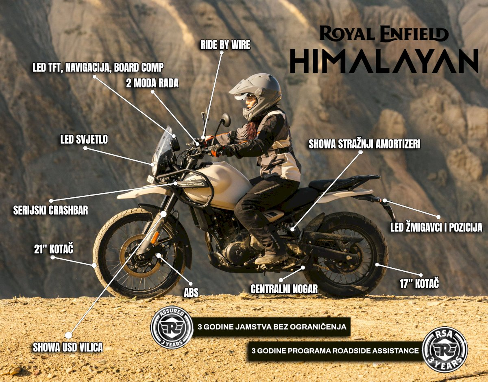

Adventure motori
Himalayan 450 — idealni motocikl za off-road avanture i istraživanja.

Royal Enfield Himalayan 450
Opis
Himalayan 450 je namjenski adventure motocikl dizajniran za terensku vožnju i duge putovanje. Robustan, pouzdana i sposoban — odličan izbor za avanturiste.
Specifikacije
- Motor: 452cc, jednocilindarski, 4-taktni
- Snaga: 40 KS @ 6500 RPM
- Moment: 40 Nm @ 4250 RPM
- Cijena: ~750.000 kn
- Visina sjedala: 800 mm (prilagodljivo)
Prednosti
- Izvrstan za off-road vožnju
- Veliki prostor za prtljagu
- Odličan za duge putovanje
- Visokie sjedalo za bolji pregled
- Dobra potrošnja goriva za svoju klasu
- Jednostavno održavanje
Mane
- Teži od manjih modela
- Viši centar gravitacije — izazov za početnike na terenu
- Skupiji od starter motora
- Nije idealan za urbanu vožnju